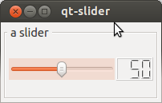
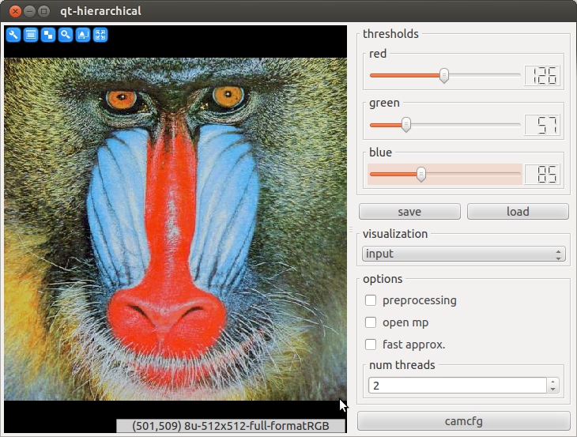
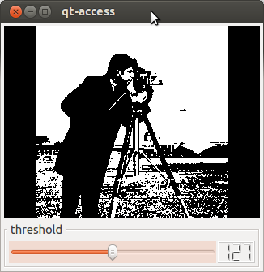
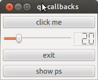
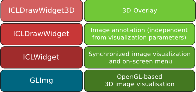
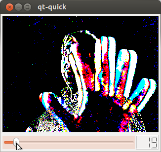
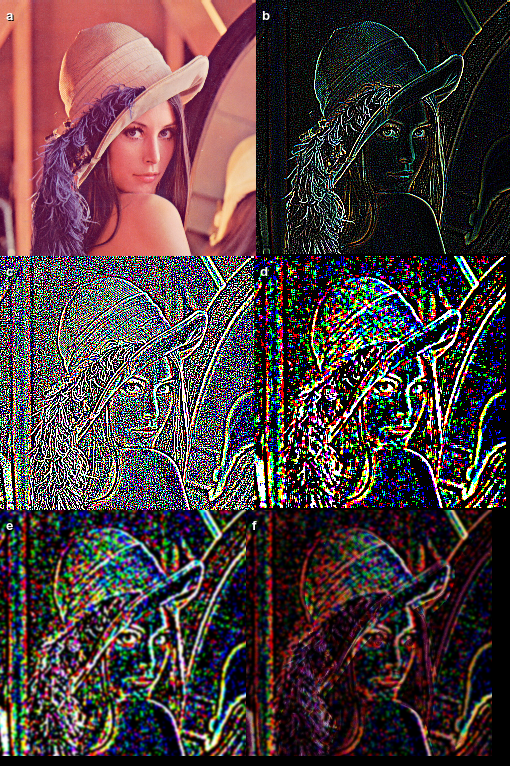

GUI Creation and Visualization Framework¶
As it’s core, this package provides a wrapper API for the development of Qt-based GUI applications. The main class of this package is the qt::GUI, which is a general container component. In addition to wrapper components for all common Qt-Widgets, such as sliders, buttons and check-boxes, we provide a set of highly optimized image and data visualization Widgets. We will here give a complete but concise overview of ICL’s GUI creation framework. Step by step examples are given in the tutorial chapters (GUI-Applications and Interactive GUI Applications)
In additions, the ICLQt modules provides The Quick Framework for rapid prototyping.
The GUI Creation Framework¶
- Introduction
- First Steps
- Accessing the GUI from the Working Thread
- Overview of all GUI Components
- Special GUI components
- The Image Visualization and Annotation Framework
- The MouseHandler Interface
There are most different approaches for the creation of graphical user interfaces – short GUI’s. ICL follows the idea of the Qt-library, that uses a object oriented class tree whose nodes describe GUI-interfaces and classes. Actually, ICL’s GUI creation framework is a shallow wrapper around the Qt library, that always preserves accessibility to its internally used Qt Widgets.
We basically distinguish between two different types of GUI components: normal components, represented by the qt::GUIComponent class interface and container components, represented by the qt::ContainerGUIComponent class interface. Each container type provides a special layout for its contained components, which can either be normal- or other container components. By these means it allows for creating very complex and hierarchical GUI layouts.
Introduction¶
A fundamental question could be:
“Why would one want to use a Qt-Wrapper rather than to use the well known and user friendly Qt-library directly?”
The answer is:
“Because ICL’s GUI creation framework allows for creating very complex GUIs with very little code, so that you can completely concentrate on the implementation of your computer vision stuff”
Here is a list of the advantages of ICL’s GUI creation framework:
- very concise yet intuitive syntax (allows for writing beautiful code)
- the most common features of all common GUI components are directly supported
- for non-Qt experts: much simpler to learn and to use
- neither Qt-signals and -slots nor the Qt-meta compiler (moc) is needed any more
- solves all GUI-thread – working-thread synchronization issues for you
- provides implicit and standardized layout handling
- always provides access to the wrapper Qt-components
During the implementation of computer vision applications, the programmer does usually not want to spend many resources for the implementation of the GUI-based interactive features of it, calling for a powerful, yet easy to use GUI creation toolbox. In particular image visualization, but also common GUI components, such as sliders, buttons and check-boxes, should be creatable in a simple manner and their current states have to be accessible in an easy way. Another important factor for computer-vision applications, that in general produce a high processor usage, is the decoupling of the GUI and the working loop, which is usually implemented by using at least two threads: a GUI thread, and one or more working threads.
Of course, this can be implemented using the powerful Qt-framework, however, there are many issues, that have to be solved manually
- The GUI-thread (Qt-event loop) and the working thread must be synchronized
- User interactions must be handled using Qt’s signal and slot connections (here sometimes also the Qt-meta compiler needs to be used)
- Complex GUIs require complex layouts to be created, and whoever tried to rearrange certain Qt-components within complex GUI by adapting layouts and size-constraints and -policies knows, that this can be a difficult and time consuming task
First Steps¶
Let’s get a first glance at how things are connected. A more detail impression can be obtained by working though the tutorial.
A Simple Slider¶
A Qt-expert might thing “So what?”, because he can create a slider with layout in 1 minute with only 5 lines of code. ICL’s GUI creation framework also endows non-Qt-experts with the ability to create and layout a slider using a single line of code.
|
 |
The ICLApplication class¶
As we will seen in the following examples, the ICLApplication (typedef’d to ICLApp), is a very central component of interactive ICL applications. Usually, it is instantiated with a given initialization and working-thread function pointer. The latter one is not used and therefore left out in the example above. Its ICLApplication::exec-method performs the following steps:
- instantiating a singelton QApplication instance
- parsing optionally given program arguments (see Program Argument Evaluation)
- calling the initialization method in the applications main thread
- creating a working thread for each given run-function-pointer
- start the thread, which loops this function
- entering the Qt event loop
GUI Definition Expressions¶
An expression that defines a GUI usually consists of several stream-operator-based statements, each defining a single GUI-component. Each component provides one or more constructors the get component-related parameters, such as the minimum, maximum and initial value of a slider. Additionally, a set of general options can be added:
gui << Slider(0,100,255).handle("slider").label(threshold).maxSize(100,2);
handle(string)
defines the component’s ID, which can later be used to access the GUI component to either read-out its current value, or to adapt its state
label(string)
defines a component label, which is used to create a labeled border around the GUI component.
tooltip(string)
adds a component tooltip (this feature is not supported for container components
minSize(xCells,yCells)
defines the minimum size of the component, given in units of 20 pixels
maxSize(xCells,yCells)
defines the minimum size of the component, given in units of 20 pixels. In combination with minSize, complex size-constraints can be created
size(xCells,yCells)
defines the initial size of the component
out(string)
this feature only provides for some of the components (see Overview of all GUI Components). It makes the component also register a single int or float variable, liked to the component value, which can be extracted by reference. Usually, declaring a handle is more recommended.
hideIf(bool)
this is a very special options, that can be used to conditionally create GUI-components. If the boolean parameter is true, the component gets a dummy-status and is not translated into an actual Qt component at all
margin(int)
This is only supported for container components and defines the layout’s outer margin
spacing(int)
This is only supported for container components and defines the layout’s component spacing
Complex Hierarchical GUIs¶
Using a single GUI container component does usually lead to ill-layouted GUIs. In order to avoid this, ICL’s GUI creation framework allows for nesting hierarchical GUI creation expressions, leading to advanced GUI layouts. A very common layout for simple interactive image processing applications is to have a main image view plus a simple vertical list of controls, which is usually at the right hand side of the main window. In this case we recommend to use e.g. a horizontal splitting component that contains the image view on the left and a vertically layouted container containing the controls on the right. The control panel can then again be layouted using nested sub-containers:
|

started with appname -input create mandril |
{kind=link}
Dynamic XML-based GUI Description¶
In order to separate the GUI layout from the actual implementation, the DynamicGUI class can be used. This class enables the programmer to define the GUI layout in a separate XML-file that is then parsed by the application at runtime. The advantage of this approach is that the adaption of GUI parameters or the adding of new GUI components as well as re-arrangement of the GUI components no longer requires to re-compile the application. In contrast to this, the GUI definition syntax is no longer parsed and evaluated by the compiler, which means that the development cycle is not neccessarily shortened.
RSB-based Remote GUIs¶
With the qt::RSBRemoteGUI, an additional separation of the GUI and the actual application code can be reached. This class can wrapped around an existing gui. It then analyses the wrapped GUI and provides setter and getter RSB-based network interfaces for each of the GUI components. By these means, ICL’s GUI-creation framework can more easily be used in a decoupled fashion.
The ICL-application icl-remote-gui bundles this functionality by being able to load a GUI-xml-file and then to automatically create the corresponding RSB-interfaces for it
Accessing the GUI from the Working Thread¶
As soon as our application needs a working loop, e.g. for image processing, a run method can be passed to the ICLApp constructor as well. The top-level GUI component – usually represented by a global GUI instance – provides thread-safe access to all contained component states. Please note, that GUI instances must be created by either streaming the special qt::Show or qt::Create component into it or by calling its GUI::create or GUI::show method. Before this is done, only a hierarchical description of the GUI exists, but not underlying Qt-components. GUI components can be access using the GUI’s index operator GUI::operator[](const std::string &key), where key refers to a component’s handle or output ID, which is given by the .handle(“handle-name”) method in the GUI-definition expression.
|
 |
Handles vs Outputs¶
For a some of the components (see Overview of all GUI Components) also an output is provided. E.g. a slider component can be set up with an output ID, which can then later be used for extracting an int-reference, which is directly linked to the slider-value. Accessing this int-reference is usually a little bit faster than using the GUI’s index operator, which has to perform a map-lookup internally. Actually, a benchmark showed, that the performance loss is completely negligible for 99.9% of all applications developed. Therefore, we strongly recommend to use the GUI’s index operator for accessing GUI-components.
1 2 3 4 5 6 7 8 9 10 11 12 13 14 15 16 17 18 19 | #include <ICLQt/Common.h>
GUI gui;
void init(){
gui << Slider(0,100,50).out("foo")
<< Label().handle("bar")
<< Show();
}
void run(){
// create a static reference to the
static int &sliderValue = gui.get<int>("foo");
gui["bar"] = sliderValue;
}
int main(int n, char **args){
return ICLApp(n,args,"",init,run).exec();
}
|
The GUI’s Index Operator¶
The index operator uses a smart utility class of type qt::DataStore::Data, which allows for direct and internally type-checked assignment. For this, the qt::DataStore::Data instance returned by the index operator provides template-based assignment and implicit cast operators:
template<class T> void operator=(const T &t);
template<class T> operator T() const;
Internally, contained GUI entries, such as a slider value, are registered with an RTTI-type, which is checked whenever one of these operators is used. For each pair of assignable types, an assign-method is registered internally. For transparency reasons, the application icl-gui-assignment-info is provided, which is able to list all supported assignment-rules, each defined by a source (rvalue) and destination (lvalue) type, e.g.:
icl-gui-assignment-info -s int
lists all assignment rules, that have an int-typed lvalue. The source instance can be either part of the GUI, such as a slider-value or an external integer variable that is assigned to an GUI component. Here are some typical examples:
1 2 3 4 5 6 7 8 9 10 11 12 13 14 15 16 17 18 19 20 21 22 23 24 25 26 27 28 29 30 31 32 33 34 35 36 37 38 39 40 41 42 43 44 45 46 47 48 49 50 51 | #include <ICLQt/Common.h>
GUI gui;
void init(){
gui << Slider(0,100,50).handle("mySlider").out("mySliderVal")
<< Label("something").handle("myLabel")
<< Combo("entry1,entry2,entry3").handle("myCombo")
<< Show();
}
void run(){
// extract slider value from handle
int i = gui["mySlider"];
// same works for the value
int j = gui["mySliderVal"];
// set slider value (actually moves the slider)
gui["mySlider"] = 30;
// no error, but the slider is not moved
gui["mySliderVal"] = 30;
// set slider range
gui["mySlider"] = Range32s(100,200);
// set label text (must be a string)
gui["myLabel"] = str("a new text");
// get label text (usually not used)
std::string t = gui["myLabel"];
// get selected combobox entry
std::string c = gui["myCombo"];
// get selected combobox index
int idx = gui["myCombo"];
// set selected combobox entry (must be string)
gui["myCombo"] = str("entry1");
// set selected combobox index
gui["myCombo"] = 2;
Thread::msleep(1000);
}
int main(int n, char **args){
return ICLApp(n,args,"",init,run).exec();
}
|
Note
In a few cases, C++ cannot automatically infer the desired lvalue type of an assignment expression. For these cases the explicit template-based as<T> (DataStore::Data::as) method is provided:
gui << Slider(0,100,50).handle("test") << Show();
int i = gui["test"]; // works
int j = 0;
j = gui["test"]; // error: ambiguous assignment
j = gui["test"].as<int>(); // works
Performance of the GUI-Index Operator¶
As mentioned above, the GUI index operator needs to perform a map-lookup in order to locate the value of an actual component. The following benchmark however proofs the negligibility of the time consumption used for the index operator in common applications.
System
2,4 GHz Intel Core2Duo, 4 GB Ram, Ubuntu 12.04 32 bit
Setup
We used a complex GUI containing 10, 30, 50 and even 100 GUI-components, which is usually much more then one would expect in a real-world example. The GUIs internal map contains twice as may entries, one for each component handle and one for the corresponding output. We also used extraordinary long output-names, build from random strings of length 30. For measurement accuracy, we took the time for 1000 uses of the index operator
Results
Number of Components: 10 30 50 100 Times for 1000 accesses 0.30ms 0.32ms 0.35ms 0.37ms
Evaluation
As one can easily see, the used std::map is very fast. The performed benchmark also demonstrates the logarithmic search behavior of the map. In real-world applications, the time consumption all uses of the GUI’s index operator in total will never take more than a 10th of a millisecond – usually even magnitudes less.
Callback Registration¶
Most GUI components support the ability to register callbacks to them that are executed immediately when the component state is changed. Immediately means that the callback is executed in the GUI-thread. This is particularly necessary when the callback needs to do Qt-GUI stuff, such as showing a dialog. There are two types of possible callbacks, simple ones of type:
utils::Function<void,void>
e.g. void myCallback(){...}
, or so called complex ones
utils::Function<void,const std::string&>
e.g. void myComplexCallback(const std::string &)
Simple callbacks are just executed, however, if registered to more than one component, it is not possible to identify the source of the component. The complex callback type has a single std::string argument, that is filled with the source component’s handle-name.
Due to the fact that callbacks are executed in the applications GUI-thread, the results must be explicitly synchronized with the working thread. Therefore, callbacks should only be used economically. Callbacks can be registered directly to the return-type of the GUI’s index operator. The callbacks are always executed after the component state has been changed, the callback trigger is always the most trivial action, such as moving a slider or clicking a button.
|
 |
Overview of all GUI Components¶
Common Controls¶
| Component | Corresonding Handle Type | Wrapped Qt-Component | Description | Output |
|---|---|---|---|---|
| qt::Combo | qt::ComboHandle | QComboBox | combo box | – |
| qt::Label | qt::LabelHandle | QLabel | text label | – |
| qt::String | qt::StringHandle | QTextInput | input field for text | – |
| qt::Float | qt::FloatHandle | QTextInput | input field for floats | current value, float |
| qt::Int | qt::IntHandle | QTextInput | input field for integers | current value, int |
| qt::Button | qt::ButtonHandle | QPushButton | push- or toggle button | toggled state, bool [1] |
| qt::ButtonGroup | qt::ButtonGroupHandle | QButtonGroup | list of exclusive radio buttons | current selcted intex, int |
| qt::CheckBox | qt::CheckBoxHandle | QCheckBox | check box | check state, bool |
| qt::Slider | qt::SliderHandle | QSlider | simple integer-valued slider | current value, int |
| qt::FSlider | qt::FSliderHandle | QSlider (adapted) | float valued slider | current value, float |
| qt::Spinner | qt::SpinnerHandle | QSpinBox | a spin box component | current vlaue, int |
| [1] | only for in case of toogle buttons |
Image and Data Visualization Components¶
| Component | Corresonding Handle Type | Wrapped Qt-Component | Description | Output |
|---|---|---|---|---|
| qt::Image | qt::ImageHandle | qt::ICLWidget | ICL’s image display | – |
| qt::Draw | qt::DrawHandle | qt::ICLDrawWidget | Image display for image annotation | – |
| qt::Draw3D | qt::DrawHandle3D | qt::ICLDrawWidget3D | Image display with 3D overlay | – |
| qt::Plot | qt::PlotHandle | qt::PlotWidget | 2D scatter and function plotting | – |
Complex GUI Components¶
| Component | Corresonding Handle Type | Wrapped Qt-Component | Description | Output |
|---|---|---|---|---|
| qt::CamCfg | – | qt::CamCfgWidget | Button to access camera properties | – |
| qt::ColorSelect | qt::ColorHandle | qt::ColorLabel | RGB or RGBA color selection | current color, core::Color4D |
| qt::Disp | qt::DispHandle | qt::LabelMatrix | 2D array of float labels | – |
| qt::Fps | qt::FPSHandle | QLabel (adapted) | shows the application’s FPS count | – |
| qt::Prop | – | only internally used | GUI for utils::Configurables | – |
| qt::Ps | – | only internally used | shows process information | – |
Other GUI Components¶
| Component | Description |
|---|---|
| qt::Dummy | Non visible dummy instance (not created) |
| qt::Create | Finalizes the GUI definition and actually creates the GUI [2] |
| qt::Show | Finalizes the GUI definition and creates and shows the GUI [2] |
| [2] | (1, 2) The actual GUI does not exist, before either qt::Create or qt::Show was streamed into it (alternatively the top level GUI’s GUI::create and GUI::show methods can be used). After this, the GUI is created, its definition phase is ended and the stream operators GUI::operator<< wont work anymore. Please note, that create means, that the GUI is created only, while show means, that the GUI is created and shown. Additional calls to create will not do anything, a created GUI instance can be shown using show. |
Container GUI Components¶
| Component | Corresponding Handle Type | Description |
|---|---|---|
| qt::HBox | qt::BoxHandle | horizontally alligned box layout |
| qt::VBox | qt::BoxHandle | vertically alligned box layout |
| qt::HSplit | qt::BoxHandle | horizonatal splitting component |
| qt::VSplit | qt::BoxHandle | vertical splitting component |
| qt::HScroll | qt::BoxHandle | like a HBox, but within a scrollable area |
| qt::VScroll | qt::BoxHandle | like a VBox, but within a scrollable area |
| qt::Tab | qt::TabHandle | tab’ed widget |
Special GUI components¶
Most GUI-components are now sufficiently described. However, some of the components require some extra knowledge in order to use them correctly and efficiently. These special components are listed and explained here.
qt::Int, qt::Float and qt::String
These components are translated into simple text-input fields. The different possible input types are implemented using special Qt-validators. The components will only allow for writing validated text. The input must always be confirmed by pressing enter before, the last valid entry is returned
The button has two special properties, that need to be explained. First, if it’s constructor gets two string parameters, the created button becomes a toggle-button, that has two states, indicated by the two button texts. Only in case of creating a toggle-button, an bool typed output can be created. The other special property is, how we recommend to process button clicks. Here, it is suggested to extract a ButtonHandle instance and to use it’s ButtonHandle::wasTriggered method directly in the working thread, which returns whether the button has been clicked between the last call to ButtonHandle::wasTriggered and now. An example is given in the tutorial chapter Buttons: Callbacks vs. wasTriggered()
This camera property configuration component is also very special. It can either be instantiated with a given input device filter, such as e.g. “dc” and “0”, which will allow for configuring the first dc camera device only or it can be instantiated without any parameters. If no parameters are given, it will automatically query a list of currently instantiated io::GenericGrabber instances (see The Generic Grabber) and prepare the property widget for these instances. However, this does only work if the io::GenericGrabber was initialized (using its init-method) before the GUI is actually created.
The Ps component creates a small info widget, that visualizes current process information. Right now, we use QProgressBars here, but we plan to use a real plot that shows the processor and memory usage history. In addition, the component shows the applications thread count. The additional processor usage consumed by the widget itself is usually less than 1%.
The Prop component also provides a very powerful addition to the whole GUI framework. It is tightly integrated with the utils::Configurable -interface (see The Configurable interface and the tutorial). The GUI component will read out the properties of a utils::Configurable instance and then create a complex widget for the real-time adjustment of these properties
The Fps component is rather simple. Once embedded into a GUI, it must be manually updated once in every cycle of the working thread:
void init(){ gui << Fps().handle("fps") << Show(); } void run(){ gui["fps"].render(); }
qt::Image, qt::Draw and qt::Draw3D
These are the main classes for image visualization and annotation. The wrapped QWidget-classes are explained in The Image Visualization and Annotation Framework. Their usage is demonstrated in several tutorials (see Tutorial)
The Image Visualization and Annotation Framework¶
Issues to be solved by the framework
- How can images be visualized at all?
- How can this be done efficiently?
- How can different image depths be handled (and how can this be done efficiently)?
- How must images be scaled and moved to fit optimally into a given widget?
- How can image processing and image visualization be decoupled to avoid that the GUI gets stuck if the processing loop needs a lot of time for each cycle?
- How can different threads for processing and visualisation be synchronized?
- How can the user change image visualization parameters (e.g, brightness or contrast adjustment)?
- How can images be annotated in online applications (here again, one has to face synchronization issues)?
- How can the image annotation be abstracted from visualization features (e.g., current zoom)?
- How can 3D objects be drawn into a scene so that it matches it’s real-world counter part?
- Can 3D overlay be implemented using OpenGL?
ICL’s image visualization and annotation framework essentially consists of these four classes: |
 |
qt::GLImg¶
At the lowest layer, the qt::GLImg provides an interfaces for converting core::ImgBase instances into an OpenGL texture (if the image is larger than OpenGL’s maximum texture sizes, it has to be split into several texture) that can be drawn arbitrarily into an OpenGL scene. Internally, the qt::GLImg class is used for supporting different image depths. Here, OpenGL’s pixel-transfer parameters are used for hardware accelerated brightness and contrast adjustment. Furthermore, fitting images into the widget viewport can simply be performed by the graphics hardware. The GLImg can also be used as efficient video texture. In order to reduce the use of graphics memory bandwidth, the qt::GLImg class uses a dirty-flag to determine whether an image texture actually needs to be updated.
qt::ICLWidget¶
The next layer is implemented by the qt::ICLWidget class, which inherits Qt’s QGLWidget class for the creation of an embedded OpenGL context and viewport. The qt::ICLWidget provides a software interface for setting different visualisation parameters as well as an embedded user interface for GUI-based adaption of these parameters. Furthermore, the qt::ICLWidget provides the simple to use method:
setImage(core::ImgBase*)which simply lets it visualize a new image immediately. Internally, the image is buffered into a mutex-protected interleaved intermediate format, which can more easily be transferred to the graphics buffer. Therefore setImage can simply be called from the application’s working thread without any explicit synchronization. Once an new image is given, the qt::ICLWidget will automatically post a Qt-update-event by calling the ICLWidget::render method. By these means, the internally used OpenGL context is actually re-rendered asynchronously in the application’s GUI thread.
qt::ICLDrawWidget¶
For image annotation, such as rendering box- or symbol-overlay for the visualization of current image processing results, the qt::ICLDrawWidget is provided. It works like a drawing state-machine that automatically synchronized image annotation commands with Qt’s event loop. Internally, this is achieved by using two thread-safe draw-command-queues. One of these queues can be filled with new draw commands, while the other queue belongs to the GUI thread and is rendered. Every time, the parent qt::ICLWidget classe’s render-method is called, the queues are swapped, and the queue that is now being filled with new commands is automatically cleared. At this point, the qt::ICLDrawWidget adapts the behavior of the parent qt::ICLWidget class, by not automatically calling render when a new background image is given. Since usually setting the background image is followed by posting a set of draw-commands, the render-method must be called later manually when the image annotation is finished. Image visualization is part of several tutorial chapters (see Visualization and Mouse Interaction)
qt::ICLDrawWidget3D¶
At the last level, the qt::ICLDrawWidget3D, which again extends the qt::ICLDrawWidget class, provides an interfaces for rendering 3D scenes on top of an image. The qt::ICLDrawWidget3D provides a ICLDrawWidget3D::link method, which links a simple OpenGL callback function to it. Each time, the qt::ICLDrawWidget3D is rendered, it will also execute the linked OpenGL callback function, synchronously to the GUI Thread, while still being able to render 2D annotations.
Note
It is highly recommended to use the geom::Scene class to create 3D rendering overlays (add link here). The scene class can easily provide an appropriate OpenGL callback function for it’s contained cameras.
Todo
add references and link to the ICLGeom package and the Scene class
The Quick Framework¶
In contrast to the other modules, the Quick framework focuses mainly the programmer’s convenience rather than on efficiency. It is meant to be used for rapid prototyping or for test applications. However, also in real-time applications some parts are usually not strongly restricted to real-time constraints, in particular where user interactions are processed. Most functions do what is usually completely forbidden in real-time applications: they return newly created results images. This of course usually leads to performance issues due to run-time memory allocation. However this is not the case for the Quick framework functions that use an internal memory manager, which reuses no-longer needed temporary images. Even though, image are returned by instance, due to the core::Img’s shallow copy-property, no deep copies are performed.
Overview
The framework is basically available directly by including the ICLQt/Quick.h header, which is automatically included by the commonly used header ICLQt/Common.h. This header contains a huge set of global functions that simplify some things significantly – however sometimes a little bit less efficient. Most of these functions are right now implemented for the core::Img32f type only. The Quick-header uses a typedef to qt::ImgQ to underline the fact that we are working with this framework. Furthermore, the Quick header does also automatically use all icl-namespaces and also the std::namespace, which is why it should never be included by other header files. Here is an example for a simple difference image-application:
|
 |
Affinity to ImgQ¶
Many of the global functions are implemented twice, as template and as normal function for the ImgQ (aka core::Img32f)-type e.g.:
load("myimage");
returns an qt::ImgQ, while:
load<icl8u>("myimage");
returns the image as core::Img8u.
The Very Special Function show¶
shows an image using an external viewer application. In order to avoid complex GUI handling and thread synchronization issues, the qt::show function simply writes the given image to a temporary image file, that is then opened using the icl-xv application. icl-xv is called with the -d flag, which lets show delete the temporary image immediately when loaded. This does of course only work if icl-xv can be found in the users PATH variable. Alternatively the function qt::showSetup can be used to define a custom image viewer command
Image Creation Tools¶
create images in matlab-manner. zeros(100,100,3) creates an empty 3-channel image of size 100x100. ones behaves equally, but sets all pixel values to 1
just loads an image from a file, which is usually much easier than using an io::Grabber for this. However, please note that the load function does not preserve the image depth, which is core::depth32f by default, or must be explicitly given using load<target-pixel-type>(“filename”).
creates test image, that is hard-coded within the ICLIO-library. Supported test images are “lena”, “cameraman”, “mandril”, “parrot”, and a few others.
just grabs an image using an internal grabber handling
Image Filtering and Conversion Functions¶
applies one of a set of predefined image filters
scales an image by either a factor or to a target size
re-quantifies an images value domain to a given number of levels
performs a deep copy of an image:
ImgQ a = zeros(100,100,1); ImgQ b = copy(a);
flips an image
converts images of any type to ImgQ
qt::cvt8u, qt::cvt16s, …
convert images to target depth
blurs an image by given mask radius using a separatale Gaussian filter
converts a given image to target format
extract a single channel from an image
applies a threshold operation
adds a simple text-label to the top left corner of an image.
Note
This function does not create a new image, but it works on the given image (of which a shallow copy is also returned)
allows for copying/extracting an image ROI:
ImgQ a = ones(100,100,5); a.setROI(Rect(10,10,30,30)); ImgQ b = roi(a); roi(a) = 255;
Arithmetical and Logical Operators¶
The Quick-header also provides simple to use C++ operators for the qt::ImgQ (aka core::Img32f) class. The binary operators +, -, * and / are defined for pixel-wise operations on two images and pixel-wise operations with a scalar:
|
 |
{kind=link}
The same is true for the logical operators && and ||, which perform a pixel-wise logical combination of two images.
Math Functions¶
In addition to the mathematical operators, also some mathematical standard functions are overloaded for the qt::ImgQ type: qt::sqr, qt::sqrt, qt::exp, qt::ln, and qt::abs are performed pixel-wise.
Image Concatenation Operators¶
As it could be seen in the example above, also the three operators ,, % and | are implemented. However, it is important to mention that we strongly adapted the expected default behavior of these operators:
The ,-Operator
is used to concatenate image horizontally. If the image heights are not equal, the smaller image is just made higher (without scaling the contents)
The %-Operator
performs a vertical image concatenation
The |-Operator
stacks the channels of two images.
The MouseHandler Interface¶
The qt::MouseHandler interface is provided for mouse-based interaction with- or on top of images. The qt::MouseHandler ‘s single interface function
qt::MouseHandler::process(const qt::MouseEvent &)
can be implemented to get custom mouse handling behavior. The qt::MouseEvent class does always provide information about the current image position and pixel color, the mouse is currently at. (Detailed information on this can be found in the tutorial chapter Visualization and Mouse Interaction.
There are some special predefined MouseHandler implementations for common purposes. The qt::DefineRectanglesMouseHandler can be used to define a given number of rectangles on top of an image. These can then be accessed and used for further processing steps. The qt::DefineQuadrangleMouseHandler is provided to define a single arbitrary quadrangle in an image.